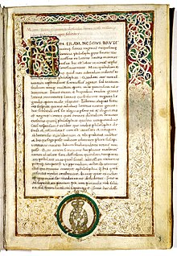
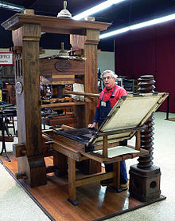
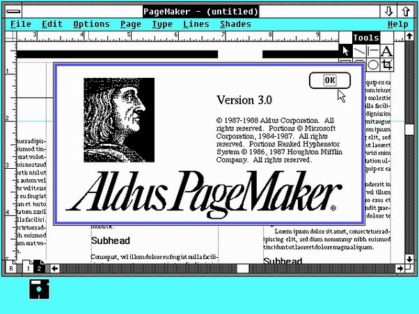

45 BC Cumae, Roman Republic
{kind=link}
Taking a break in his busy schedule Cicero
writes De Finibus Bonorum Et Malorum.
A
treatise
on Good and Evil. He used the book
to discuss his opinion on how
the philosophical schools of
his day
explained this topic.
450ad Hippo

Reading Cicero's works caused Saint Augustine to convert
to christianity. Cicero's effect
on
both him and St Jerome
caused him to be declared a "righteous pagan." Thus preserving
his works through Europe in the
middle
ages.
circa 1500 Europe
{kind=link}
Sometime during this period it is hyothesized that
a printer scrambled together text from
Cicero's book,
either deliberately or by mistake, and
used it to assist laying out pages.
It
stayed as 'filler text' to this day.
1970 Detroit Michigan USA

As can be imagined as the press industry
took off Lorum
ipsum took on an industrial
scale.
Still at this point it was so nonsensical
that no one had any idea where the text came from.
1985 Seattle Washington USA
{kind=link}
With the birth of the information age type setting
began to be planned on computers.
regardless filler text was necessary
and there was nothing better than good ol' Lorum Ipsum!
{kind=link}